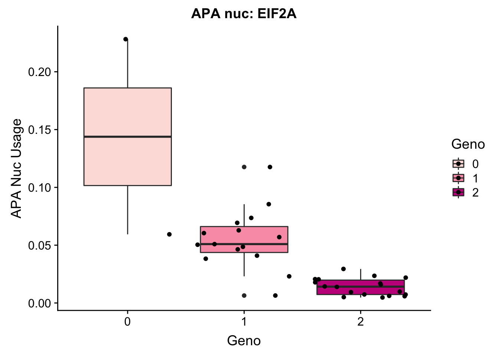
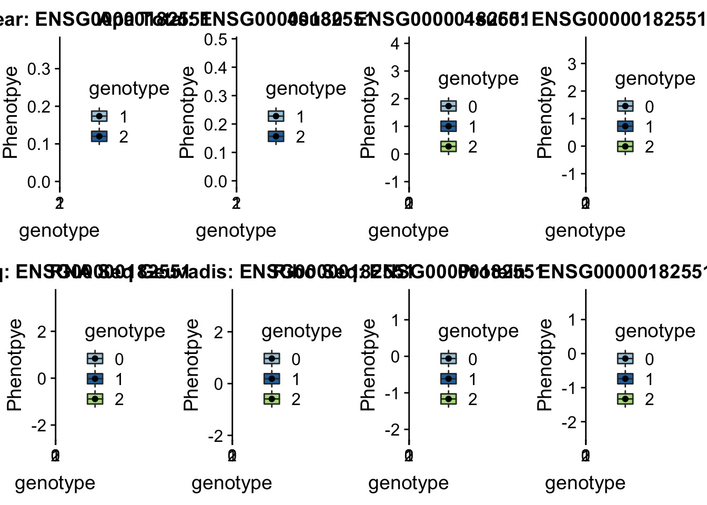
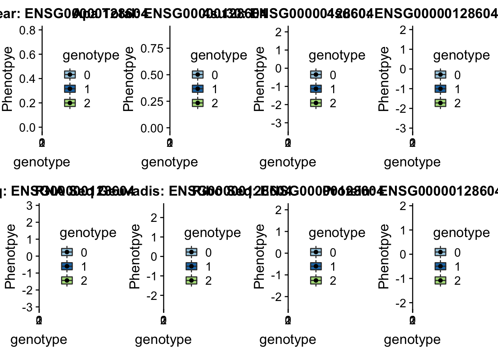
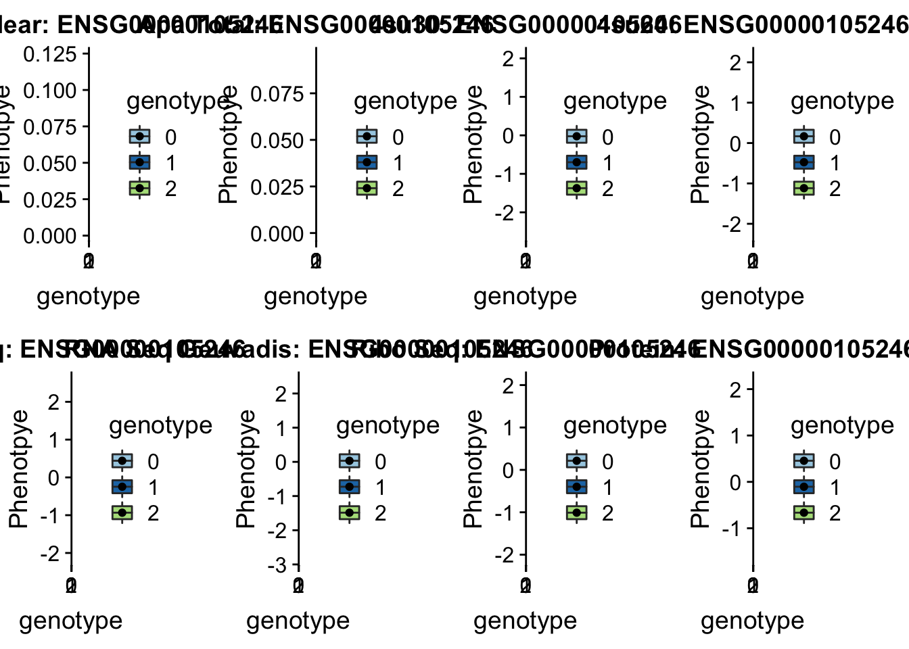
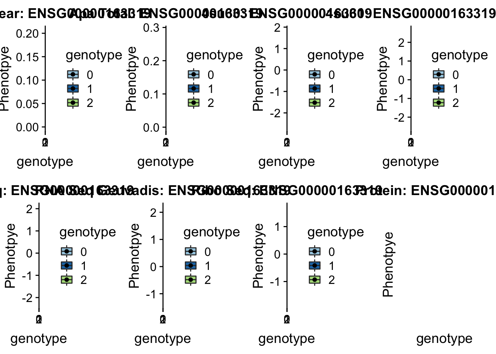
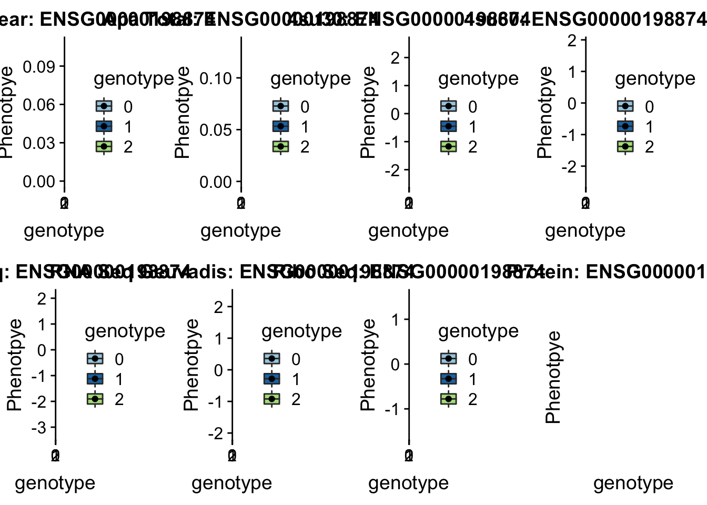
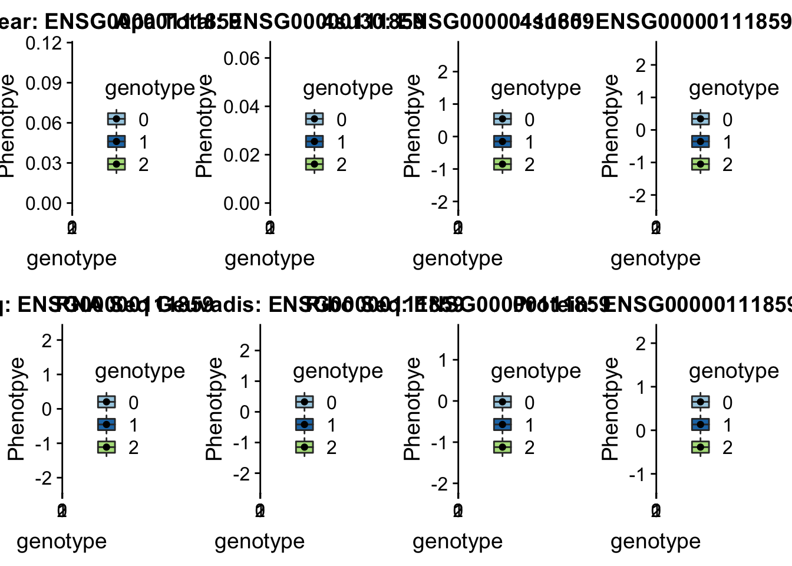
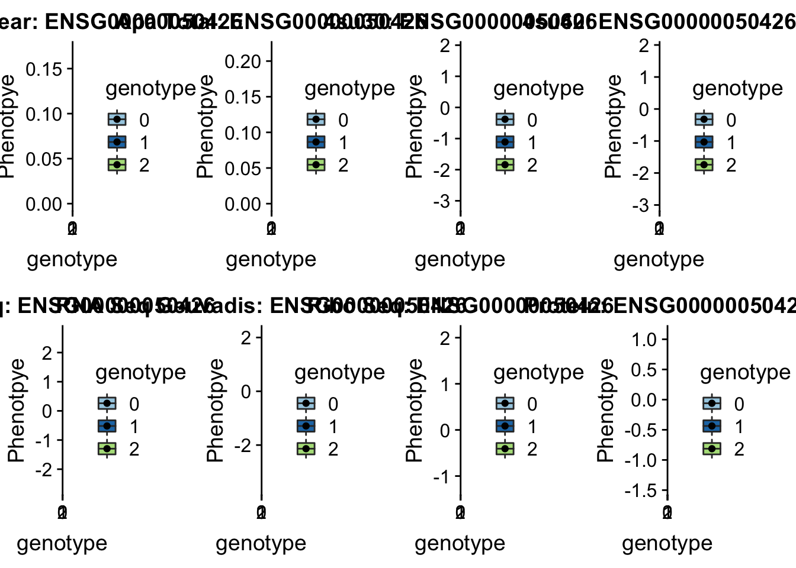

Last updated: 2018-10-11
workflowr checks: (Click a bullet for more information) ✔ R Markdown file: up-to-date
Great! Since the R Markdown file has been committed to the Git repository, you know the exact version of the code that produced these results.
✔ Environment: empty
Great job! The global environment was empty. Objects defined in the global environment can affect the analysis in your R Markdown file in unknown ways. For reproduciblity it’s best to always run the code in an empty environment.
✔ Seed:
set.seed(12345)
The command set.seed(12345) was run prior to running the code in the R Markdown file. Setting a seed ensures that any results that rely on randomness, e.g. subsampling or permutations, are reproducible.
✔ Session information: recorded
Great job! Recording the operating system, R version, and package versions is critical for reproducibility.
✔ Repository version: 1d97af5
wflow_publish or wflow_git_commit). workflowr only checks the R Markdown file, but you know if there are other scripts or data files that it depends on. Below is the status of the Git repository when the results were generated:
Ignored files:
Ignored: .DS_Store
Ignored: .Rhistory
Ignored: .Rproj.user/
Ignored: output/.DS_Store
Untracked files:
Untracked: KalistoAbundance18486.txt
Untracked: analysis/genometrack_figs.Rmd
Untracked: analysis/ncbiRefSeq_sm.sort.mRNA.bed
Untracked: analysis/snake.config.notes.Rmd
Untracked: analysis/verifyBAM.Rmd
Untracked: data/18486.genecov.txt
Untracked: data/APApeaksYL.total.inbrain.bed
Untracked: data/NuclearApaQTLs.txt
Untracked: data/RNAkalisto/
Untracked: data/TotalApaQTLs.txt
Untracked: data/Totalpeaks_filtered_clean.bed
Untracked: data/YL-SP-18486-T-combined-genecov.txt
Untracked: data/YL-SP-18486-T_S9_R1_001-genecov.txt
Untracked: data/apaExamp/
Untracked: data/bedgraph_peaks/
Untracked: data/bin200.5.T.nuccov.bed
Untracked: data/bin200.Anuccov.bed
Untracked: data/bin200.nuccov.bed
Untracked: data/clean_peaks/
Untracked: data/comb_map_stats.csv
Untracked: data/comb_map_stats.xlsx
Untracked: data/comb_map_stats_39ind.csv
Untracked: data/combined_reads_mapped_three_prime_seq.csv
Untracked: data/ensemble_to_genename.txt
Untracked: data/filtered_APApeaks_merged_allchrom_refseqTrans.closest2End.bed
Untracked: data/filtered_APApeaks_merged_allchrom_refseqTrans.closest2End.noties.bed
Untracked: data/first50lines_closest.txt
Untracked: data/gencov.test.csv
Untracked: data/gencov.test.txt
Untracked: data/gencov_zero.test.csv
Untracked: data/gencov_zero.test.txt
Untracked: data/gene_cov/
Untracked: data/joined
Untracked: data/leafcutter/
Untracked: data/merged_combined_YL-SP-threeprimeseq.bg
Untracked: data/mol_overlap/
Untracked: data/nom_QTL/
Untracked: data/nom_QTL_opp/
Untracked: data/nom_QTL_trans/
Untracked: data/nuc6up/
Untracked: data/other_qtls/
Untracked: data/peakPerRefSeqGene/
Untracked: data/perm_QTL/
Untracked: data/perm_QTL_opp/
Untracked: data/perm_QTL_trans/
Untracked: data/reads_mapped_three_prime_seq.csv
Untracked: data/smash.cov.results.bed
Untracked: data/smash.cov.results.csv
Untracked: data/smash.cov.results.txt
Untracked: data/smash_testregion/
Untracked: data/ssFC200.cov.bed
Untracked: data/temp.file1
Untracked: data/temp.file2
Untracked: data/temp.gencov.test.txt
Untracked: data/temp.gencov_zero.test.txt
Untracked: output/picard/
Untracked: output/plots/
Untracked: output/qual.fig2.pdf
Unstaged changes:
Modified: analysis/28ind.peak.explore.Rmd
Modified: analysis/39indQC.Rmd
Modified: analysis/PeakToGeneAssignment.Rmd
Modified: analysis/cleanupdtseq.internalpriming.Rmd
Modified: analysis/dif.iso.usage.leafcutter.Rmd
Modified: analysis/diff_iso_pipeline.Rmd
Modified: analysis/explore.filters.Rmd
Modified: analysis/overlapMolQTL.Rmd
Modified: analysis/overlap_qtls.Rmd
Modified: analysis/peakOverlap_oppstrand.Rmd
Modified: analysis/pheno.leaf.comb.Rmd
Modified: analysis/test.max2.Rmd
Modified: code/Snakefile
| File | Version | Author | Date | Message |
|---|---|---|---|---|
| Rmd | 1d97af5 | Briana Mittleman | 2018-10-11 | add examples |
| html | 8211a07 | Briana Mittleman | 2018-10-11 | Build site. |
| Rmd | 9b23ee6 | Briana Mittleman | 2018-10-11 | add example plots |
| html | ad6a5bf | Briana Mittleman | 2018-10-11 | Build site. |
| Rmd | 373d351 | Briana Mittleman | 2018-10-11 | add pheno code- working |
| html | e73be70 | Briana Mittleman | 2018-10-09 | Build site. |
| Rmd | 2f5f071 | Briana Mittleman | 2018-10-09 | add pheno code- not working yet |
| html | b6d5c19 | Briana Mittleman | 2018-10-08 | Build site. |
| Rmd | cdec3c1 | Briana Mittleman | 2018-10-08 | change colors |
| html | 077ed60 | Briana Mittleman | 2018-10-08 | Build site. |
| Rmd | 50c8b76 | Briana Mittleman | 2018-10-08 | plots for EIF2A in mult phenos |
Library
library(workflowr)This is workflowr version 1.1.1
Run ?workflowr for help getting startedlibrary(reshape2)
library(tidyverse)── Attaching packages ─────────────────────────────────────────────────────────────────────────────────────── tidyverse 1.2.1 ──✔ ggplot2 3.0.0 ✔ purrr 0.2.5
✔ tibble 1.4.2 ✔ dplyr 0.7.6
✔ tidyr 0.8.1 ✔ stringr 1.3.1
✔ readr 1.1.1 ✔ forcats 0.3.0── Conflicts ────────────────────────────────────────────────────────────────────────────────────────── tidyverse_conflicts() ──
✖ dplyr::filter() masks stats::filter()
✖ dplyr::lag() masks stats::lag()library(VennDiagram)Loading required package: gridLoading required package: futile.loggerlibrary(data.table)
Attaching package: 'data.table'The following objects are masked from 'package:dplyr':
between, first, lastThe following object is masked from 'package:purrr':
transposeThe following objects are masked from 'package:reshape2':
dcast, meltlibrary(cowplot)
Attaching package: 'cowplot'The following object is masked from 'package:ggplot2':
ggsavePermuted Results from APA:
nuclearAPA=read.table("../data/perm_QTL_trans/filtered_APApeaks_merged_allchrom_refseqGenes_pheno_Nuclear_transcript_permResBH.txt", stringsAsFactors = F, header = T)
totalAPA=read.table("../data/perm_QTL_trans/filtered_APApeaks_merged_allchrom_refseqGenes_pheno_Total_transcript_permResBH.txt", stringsAsFactors = F, header=T) I want to use a buzz swarm plot to plot peak usage for some of the top QTLs. I can use the examples I gave Tony.
Nuclear:
* peak305794, sid: 7:128635754
Total:
Peak: peak228606, SID 3:150302010
Peak: peak152751, SID 19:4236475
I need to pull out the genotypes for each snp and the corresponding phenotype. I want to make a python script that I can give a snp and a peak and it will make a table with the genotypes and phenotypes for the necessary gene snp pair.
geno3_m=fread("../data/apaExamp/geno3_150302010.txt", header = T) %>% dplyr::select(starts_with("NA")) %>% t
geno3df= data.frame(geno3_m) %>% separate(geno3_m, into=c("geno", "dose", "extra"), sep=":") %>% dplyr::select(dose) %>% rownames_to_column(var="ind")
apaphen228606_m= fread("../data/apaExamp/Total.peak228606.txt", header = T) %>% dplyr::select(starts_with("NA")) %>% t
apaphen228606_df=data.frame(apaphen228606_m) %>% rownames_to_column(var="ind")toplotAPA=geno3df %>% inner_join(apaphen228606_df, by="ind")
toplotAPA$dose= as.factor(toplotAPA$dose)
colnames(toplotAPA)= c("ind", "Genotype", "APA")
EIF2A_APAex=ggplot(toplotAPA, aes(y=APA, x=Genotype, by=Genotype, fill=Genotype)) + geom_boxplot() + geom_jitter() + labs(y="APA phenotype", title="Total APA: Peak 228606, EIF2A") + scale_fill_brewer(palette="YlOrRd")
ggsave("../output/plots/EIF2a_APA.png", EIF2A_APAex)Saving 7 x 5 in imageThis is in the gene EIF2A, I need to find this in the eQTL data. The ensg id for this gene is ENSG00000144895.
RNAseqEIF2A_m=read.table("../data/apaExamp/RNAseq.phenoEIF2A.txt", header=T) %>% dplyr::select(starts_with("NA")) %>% t
RNAseqEIF2A_df= data.frame(RNAseqEIF2A_m) %>% rownames_to_column("ind")
plotRNA=geno3df %>% inner_join(RNAseqEIF2A_df, by="ind")
plotRNA$dose= as.factor(plotRNA$dose)
colnames(plotRNA)= c("ind", "Genotype", "Expression")
EIF2A_RNAex=ggplot(plotRNA, aes(y=Expression, x=Genotype, by=Genotype, fill=Genotype)) + geom_boxplot() + geom_jitter() + labs(y="Normalized Expression", title="Gene Expression: EIF2A") + scale_fill_brewer(palette="YlGn")
ggsave("../output/plots/EIF2a_RNA.png", EIF2A_RNAex)Saving 7 x 5 in imageTry this in protein:
ProtEIF2A_m=read.table("../data/apaExamp/ProtEIF2A.txt", header=T) %>% dplyr::select(starts_with("NA")) %>% t
ProtEIF2A_df= data.frame(ProtEIF2A_m) %>% rownames_to_column("ind")
plotProt=geno3df %>% inner_join(ProtEIF2A_df, by="ind")
plotProt$dose= as.factor(plotProt$dose)
colnames(plotProt)= c("ind", "Genotype", "Prot_level")
IF2A_Protex= ggplot(plotProt, aes(y=Prot_level, x=Genotype, by=Genotype, fill=Genotype)) + geom_boxplot() + geom_jitter() + labs(y="Normalized Protein Level", title="Protein Level: EIF2A") +scale_fill_brewer(palette="PuBu")
ggsave("../output/plots/EIF2a_Prot.png", IF2A_Protex)Saving 7 x 5 in imagemultphenoEIF2a=plot_grid(EIF2A_APAex,IF2A_Protex,EIF2A_RNAex,nrow=1)
ggsave("../output/plots/EIF2a_multpheno.png", multphenoEIF2a, width=15, height=5)Do this with 4su 60:
have to remove the #
su60_EIF2A_m=read.table("../data/apaExamp/Foursu60EIF2A.txt", header=T) %>% dplyr::select(starts_with("NA")) %>% t
su60_EIF2A_df= data.frame(su60_EIF2A_m) %>% rownames_to_column("ind")
plot4su60=geno3df %>% inner_join(su60_EIF2A_df, by="ind")
plot4su60$dose= as.factor(plot4su60$dose)
colnames(plot4su60)= c("ind", "Genotype", "su60")
EIF2A_4su60ex=ggplot(plot4su60, aes(y=su60, x=Genotype, by=Genotype, fill=Genotype)) + geom_boxplot() + geom_jitter() + labs(y="4su60", title="4su 60min Value: EIF2A") + scale_fill_brewer(palette="RdPu") + theme_classic()
ggsave("../output/plots/EIF2a_4su60.png", EIF2A_4su60ex)Saving 7 x 5 in imageGeuvadis RNA
rnaG_EIF2A_m=read.table("../data/apaExamp/RNA_GEU_EIF2A.txt", header=T) %>% dplyr::select(starts_with("NA")) %>% t
rnaG_EIF2A_df= data.frame(rnaG_EIF2A_m) %>% rownames_to_column("ind")
plotRNAg=geno3df %>% inner_join(rnaG_EIF2A_df, by="ind")
plotRNAg$dose= as.factor(plotRNAg$dose)
colnames(plotRNAg)= c("ind", "Genotype", "RNAg")
EIF2A_RNAgex=ggplot(plotRNAg, aes(y=RNAg, x=Genotype, by=Genotype, fill=Genotype)) + geom_boxplot() + geom_jitter() + labs(y="RNA expression", title="RNA Expression Geuvadis: EIF2A") + scale_fill_brewer(palette="RdPu")
ggsave("../output/plots/EIF2a_RNAg.png", EIF2A_RNAgex)Saving 7 x 5 in imageRibo:
ribo_EIF2A_m=read.table("../data/apaExamp/Ribo_EIF2A.txt", header=T) %>% dplyr::select(starts_with("NA")) %>% t
ribo_EIF2A_df= data.frame(ribo_EIF2A_m) %>% rownames_to_column("ind")
plotrib=geno3df %>% inner_join(ribo_EIF2A_df, by="ind")
plotrib$dose= as.factor(plotrib$dose)
colnames(plotrib)= c("ind", "Genotype", "Ribo")
EIF2A_riboex=ggplot(plotrib, aes(y=Ribo, x=Genotype, by=Genotype, fill=Genotype)) + geom_boxplot() + geom_jitter() + labs(y="RNA expression", title="Ribo Geuvadis: EIF2A") + scale_fill_brewer(palette="RdPu")
ggsave("../output/plots/EIF2a_Ribo.png", EIF2A_riboex)Saving 7 x 5 in imagePython script that take a chromosome, snp, peak#, fraction
createQTLsnpAPAPhenTable.py
def main(PhenFile, GenFile, outFile, snp, peak):
fout=open(outFile, "w")
#Phen=open(PhenFile, "r")
Gen=open(GenFile, "r")
#get ind and pheno info
def get_pheno():
Phen=open(PhenFile, "r")
for num, ln in enumerate(Phen):
if num == 0:
indiv= ln.split()[4:]
else:
id=ln.split()[3].split(":")[3]
peakID=id.split("_")[2]
if peakID == peak:
pheno_list=ln.split()[4:]
pheno_data=list(zip(indiv,pheno_list))
print(pheno_data)
return(pheno_data)
def get_geno():
for num, lnG in enumerate(Gen):
if num == 13:
Ind_geno=lnG.split()[9:]
if num >= 14:
sid= lnG.split()[2]
if sid == snp:
gen_list=lnG.split()[9:]
allele1=[]
allele2=[]
for i in gen_list:
genotype=i.split(":")[0]
allele1.append(genotype.split("|")[0])
allele2.append(genotype.split("|")[1])
#now i have my indiv., phen, allele 1, alle 2
geno_data=list(zip(Ind_geno, allele1, allele2))
print(geno_data)
return(geno_data)
phenotype=get_pheno()
pheno_df=pd.DataFrame(data=phenotype,columns=["Ind", "Pheno"])
genotype=get_geno()
geno_df=pd.DataFrame(data=genotype, columns=["Ind", "Allele1", "Allele2"])
full_df=pd.merge(geno_df, pheno_df, how="inner", on="Ind")
full_df.to_csv(fout, sep="\t", encoding='utf-8', index=False)
fout.close()
if __name__ == "__main__":
import sys
import pandas as pd
chrom=sys.argv[1]
snp = sys.argv[2]
peak = sys.argv[3]
fraction=sys.argv[4]
PhenFile = "/project2/gilad/briana/threeprimeseq/data/phenotypes_filtPeakTranscript/filtered_APApeaks_merged_allchrom_refseqGenes.Transcript_sm_quant.%s.pheno_fixed.txt.gz.phen_chr%s"%(fraction, chrom)
GenFile= "/project2/gilad/briana/YRI_geno_hg19/chr%s.dose.filt.vcf"%(chrom)
outFile = "/project2/gilad/briana/threeprimeseq/data/ApaQTL_examples/qtlSNP_PeakAPA%s.%s%s.txt"%(fraction, snp, peak)
main(PhenFile, GenFile, outFile, snp, peak)
Use the results to plot the nuclear pheno:
EIF2a_APAnuc=read.table("../data/apaExamp/qtlSNP_PeakAPANuclear.3:150302010peak228606.txt", header=T, stringsAsFactors = F) %>% mutate(Geno=Allele1 + Allele2)
EIF2a_APAnuc$Geno= as.factor(as.character(EIF2a_APAnuc$Geno))
ggplot(EIF2a_APAnuc, aes(y=Pheno, x=Geno, by=Geno, fill=Geno)) + geom_boxplot() + geom_jitter() + labs(y="APA Nuc Usage", title="APA nuc: EIF2A") + scale_fill_brewer(palette="RdPu")
| Version | Author | Date |
|---|---|---|
| e73be70 | Briana Mittleman | 2018-10-09 |
This does the total and nuclear fraction of APA. I will do this for a snp and gene and get all of the other phenotypes. This will be similar other than changing the names of the genes and seperating the name for all but protein.
createQTLsnpMolPhenTable.py
def main(PhenFile, GenFile, outFile, snp, gene, molPhen):
#genenames=open("/project2/gilad/briana/genome_anotation_data/ensemble_to_genename.txt", "r" )
#for ln in genenames:
# geneName=ln.split()[1]
# if geneName == gene:
#gene_ensg=ln.split()[0]
gene_ensg=gene
fout=open(outFile, "w")
#Phen=open(PhenFile, "r")
Gen=open(GenFile, "r")
def getPheno(geneE=gene_ensg , mp=molPhen):
pheno=open(PhenFile, "r")
#get ind and pheno info
mp_use=mp[1:-1]
if mp_use=="prot":
for num,ln in enumerate(pheno):
if num == 0:
indiv= ln.split()[4:]
else:
gene=ln.split()[3]
if gene == str(geneE):
print("x")
pheno_list=ln.split()[4:]
pheno_data= list(zip(indiv, pheno_list))
return(pheno_data)
else:
for num,ln in enumerate(pheno):
if num == 0:
indiv= ln.split()[4:]
else:
full_gene=ln.split()[3]
gene= full_gene.split(".")[0]
if gene == geneE:
print(gene)
pheno_list=ln.split()[4:]
pheno_data= list(zip(indiv, pheno_list))
return(pheno_data)
def getGeno(geno, SNP):
for num, lnG in enumerate(geno):
if num == 13:
Ind_geno=lnG.split()[9:]
if num >= 14:
sid= lnG.split()[2]
if sid == SNP:
gen_list=lnG.split()[9:]
allele1=[]
allele2=[]
for i in gen_list:
genotype=i.split(":")[0]
allele1.append(genotype.split("|")[0])
allele2.append(genotype.split("|")[1])
#now i have my indiv., phen, allele 1, alle 2
geno_data=list(zip(Ind_geno, allele1, allele2))
return(geno_data)
phenotype_data=getPheno()
print(phenotype_data)
pheno_df=pd.DataFrame(data=phenotype_data,columns=["Ind", "Pheno"])
genotype_data=getGeno(Gen, snp)
print(genotype_data)
geno_df=pd.DataFrame(data=genotype_data, columns=["Ind", "Allele1", "Allele2"])
full_df=pd.merge(geno_df, pheno_df, how="inner", on="Ind")
full_df.to_csv(fout, sep="\t", encoding='utf-8', index=False)
fout.close()
if __name__ == "__main__":
import sys
import pandas as pd
chrom=sys.argv[1]
snp = sys.argv[2]
gene = sys.argv[3]
molPhen=sys.argv[4]
PhenFile = "/project2/gilad/briana/threeprimeseq/data/molecular_phenos/fastqtl_qqnorm%sphase2.fixed.noChr.txt"%(molPhen)
GenFile= "/project2/gilad/briana/YRI_geno_hg19/chr%s.dose.filt.vcf"%(chrom)
outFile = "/project2/gilad/briana/threeprimeseq/data/ApaQTL_examples/qtlSNP_Peak%s%s%s.txt"%(molPhen, snp, gene)
main(PhenFile, GenFile, outFile, snp, gene,molPhen)
test this:
python createQTLsnpMolPhenTable.py 3 3:150302010 EIF2A _RNAseq_list for phenos:
4su_30
4su_60
RNAseqGeuvadis
RNAseq
prot
ribo
Create a bash script that will use a for loop to run the python script on a all of the phenotypes
run_createQTLsnpMolPhenTable.sh
#!/bin/bash
#SBATCH --job-name=run_createQTLsnpMolPhenTable
#SBATCH --account=pi-yangili1
#SBATCH --time=24:00:00
#SBATCH --output=run_createQTLsnpMolPhenTable.out
#SBATCH --error=run_createQTLsnpMolPhenTable.err
#SBATCH --partition=broadwl
#SBATCH --mem=12G
#SBATCH --mail-type=END
module load python
chrom=$1
snp=$2
gene=$3
for i in "_4su_30_" "_4su_60_" "_RNAseqGeuvadis_" "_RNAseq_" "_prot." "_ribo_"
do
python createQTLsnpMolPhenTable.py ${chrom} ${snp} ${gene} ${i}
done
I want to imput the files with the following structure:
/Users/bmittleman1/Documents/Gilad_lab/threeprimeseq/data/apaExamp/qtlSNP_Peakmolpheno.snp.peak/gene.txt
I will use these to make cowplot with ggplot boxplots for each phenotypes. To do this I will create a function that takes in a snp, peak, and gene and creates each phenotype plot. It will then return the cowplot plot grid.
plotQTL_func= function(SNP, peak, gene){
apaN_file=read.table(paste("../data/apaExamp/qtlSNP_PeakAPANuclear.", SNP, peak, ".txt", sep = "" ), header=T)
apaT_file=read.table(paste("../data/apaExamp/qtlSNP_PeakAPATotal.", SNP, peak, ".txt", sep = "" ), header=T)
su30_file=read.table(paste("../data/apaExamp/qtlSNP_Peak_4su_30_", SNP, gene, ".txt", sep=""), header = T)
su60_file=read.table(paste("../data/apaExamp/qtlSNP_Peak_4su_60_", SNP, gene, ".txt", sep=""), header=T)
RNA_file=read.table(paste("../data/apaExamp/qtlSNP_Peak_RNAseq_", SNP, gene, ".txt", sep=""),header=T)
RNAg_file=read.table(paste("../data/apaExamp/qtlSNP_Peak_RNAseqGeuvadis_", SNP, gene, ".txt", sep=""), header = T)
ribo_file=read.table(paste("../data/apaExamp/qtlSNP_Peak_ribo_", SNP, gene, ".txt", sep=""),header=T)
prot_file=read.table(paste("../data/apaExamp/qtlSNP_Peak_prot.", SNP, gene, ".txt", sep=""), header=T)
ggplot_func= function(file, molPhen,GENE){
file = file %>% mutate(genotype=Allele1 + Allele2)
file$genotype= as.factor(as.character(file$genotype))
plot=ggplot(file, aes(y=Pheno, x=genotype, by=genotype, fill=genotype)) + geom_boxplot(width=.25) + geom_jitter() + labs(y="Phenotpye",title=paste(molPhen, GENE, sep=": ")) + scale_fill_brewer(palette="Paired")
return(plot)
}
apaNplot=ggplot_func(apaN_file, "Apa Nuclear", gene)
apaTplot=ggplot_func(apaT_file, "Apa Total", gene)
su30plot=ggplot_func(su30_file, "4su30",gene)
su60plot=ggplot_func(su60_file, "4su60",gene)
RNAplot=ggplot_func(RNA_file, "RNA Seq",gene)
RNAgPlot=ggplot_func(RNAg_file, "RNA Seq Geuvadis",gene)
riboPlot= ggplot_func(ribo_file, "Ribo Seq",gene)
protplot=ggplot_func(prot_file, "Protein",gene)
full_plot= plot_grid(apaNplot,apaTplot, su30plot, su60plot, RNAplot, RNAgPlot, riboPlot, protplot,nrow=2)
return (full_plot)
}Try this with the EIF2A QTL:
eif2a_allplots=plotQTL_func(SNP="3:150302010", peak="peak228606", gene="EIF2A")
ggsave("../output/plots/EIF2A_allplots.png", eif2a_allplots, height=5, width=12)Step 1: Figure out what gene the peak is in.
grep peak164036 /project2/gilad/briana/threeprimeseq/data/perm_APAqtl_trans/filtered_APApeaks_merged_allchrom_refseqGenes_pheno_Nuclear_transcript_permResBH.txtThis peak is in ADI1
Step2: Get the total and nuclear APA values by genotype with createQTLsnpAPAPhenTable.py
python createQTLsnpAPAPhenTable.py 2 2:3502035 peak164036 Total
python createQTLsnpAPAPhenTable.py 2 2:3502035 peak164036 NuclearStep 3: Get the ensg gene name:
grep ADI1 /project2/gilad/briana/genome_anotation_data/ensemble_to_genename.txtStep 4: Run this on the other phenotypes with : run_createQTLsnpMolPhenTable.sh
sbatch run_createQTLsnpMolPhenTable.sh "2" "2:3502035" "ENSG00000182551"
Step 4: copy files to computer:
scp brimittleman@midway2.rcc.uchicago.edu:/project2/gilad/briana/threeprimeseq/data/ApaQTL_examples/qtlSNP_Peak*2:* . Step 5: plot
plotQTL_func(SNP="2:3502035", peak="peak164036", gene="ENSG00000182551")
| Version | Author | Date |
|---|---|---|
| 8211a07 | Briana Mittleman | 2018-10-11 |
grep peak305794 /project2/gilad/briana/threeprimeseq/data/perm_APAqtl_trans/filtered_APApeaks_merged_allchrom_refseqGenes_pheno_Nuclear_transcript_permResBH.txt
#gene=IRF5
grep IRF5 /project2/gilad/briana/genome_anotation_data/ensemble_to_genename.txt
#ensg= ENSG00000128604
python createQTLsnpAPAPhenTable.py 7 7:128635754 peak305794 Total
python createQTLsnpAPAPhenTable.py 7 7:128635754 peak305794 Nuclear
sbatch run_createQTLsnpMolPhenTable.sh "7" "7:128635754" "ENSG00000128604"
scp brimittleman@midway2.rcc.uchicago.edu:/project2/gilad/briana/threeprimeseq/data/ApaQTL_examples/qtlSNP_Peak_*7:* .
scp brimittleman@midway2.rcc.uchicago.edu:/project2/gilad/briana/threeprimeseq/data/ApaQTL_examples/qtlSNP_PeakAPA*.7* .plotQTL_func(SNP="7:128635754", peak="peak305794", gene="ENSG00000128604")
| Version | Author | Date |
|---|---|---|
| 8211a07 | Briana Mittleman | 2018-10-11 |
grep peak152751 /project2/gilad/briana/threeprimeseq/data/perm_APAqtl_trans/filtered_APApeaks_merged_allchrom_refseqGenes_pheno_Nuclear_transcript_permResBH.txt
#gene=EBI3
grep EBI3 /project2/gilad/briana/genome_anotation_data/ensemble_to_genename.txt
#ensg= ENSG00000105246
python createQTLsnpAPAPhenTable.py 19 19:4236475 peak152751 Total
python createQTLsnpAPAPhenTable.py 19 19:4236475 peak152751 Nuclear
sbatch run_createQTLsnpMolPhenTable.sh "19" "19:4236475 " "ENSG00000105246"
scp brimittleman@midway2.rcc.uchicago.edu:/project2/gilad/briana/threeprimeseq/data/ApaQTL_examples/*19:4236475* .plotQTL_func(SNP="19:4236475", peak="peak152751", gene="ENSG00000105246")
| Version | Author | Date |
|---|---|---|
| 8211a07 | Briana Mittleman | 2018-10-11 |
#gene=MRPS18C
grep MRPS18C /project2/gilad/briana/genome_anotation_data/ensemble_to_genename.txt
#ensg= ENSG00000163319
python createQTLsnpAPAPhenTable.py 4 4:84382264 peak241853 Total
python createQTLsnpAPAPhenTable.py 4 4:84382264 peak241853 Nuclear
sbatch run_createQTLsnpMolPhenTable.sh "4" "4:84382264 " "ENSG00000163319"
scp brimittleman@midway2.rcc.uchicago.edu:/project2/gilad/briana/threeprimeseq/data/ApaQTL_examples/*4:84382264* .We dont have protein information for this gene
plotQTL_func(SNP="4:84382264", peak="peak241853", gene="ENSG00000163319")
| Version | Author | Date |
|---|---|---|
| 8211a07 | Briana Mittleman | 2018-10-11 |
#gene=TYW1
grep TYW1 /project2/gilad/briana/genome_anotation_data/ensemble_to_genename.txt
#ensg= ENSG00000198874
python createQTLsnpAPAPhenTable.py 7 7:66595366 peak298097 Total
python createQTLsnpAPAPhenTable.py 7 7:66595366 peak298097 Nuclear
sbatch run_createQTLsnpMolPhenTable.sh "7" "7:66595366" "ENSG00000198874"
scp brimittleman@midway2.rcc.uchicago.edu:/project2/gilad/briana/threeprimeseq/data/ApaQTL_examples/*7:66595366* .plotQTL_func(SNP="7:66595366", peak="peak298097", gene="ENSG00000198874")
#gene=CSMD1
grep CSMD1 /project2/gilad/briana/genome_anotation_data/ensemble_to_genename.txt
#ensg= ENSG00000183117
python createQTLsnpAPAPhenTable.py 8 8:3037787 peak310334 Total
python createQTLsnpAPAPhenTable.py 8 8:3037787 peak310334 Nuclear
sbatch run_createQTLsnpMolPhenTable.sh "8" "8:3037787" "ENSG00000183117"
scp brimittleman@midway2.rcc.uchicago.edu:/project2/gilad/briana/threeprimeseq/data/ApaQTL_examples/*8:3037787* .We do not have molecular phenotypes for this gene.
#gene=NEDD9
grep NEDD9 /project2/gilad/briana/genome_anotation_data/ensemble_to_genename.txt
#ensg= ENSG00000111859
python createQTLsnpAPAPhenTable.py 6 6:11212754 peak272002 Total
python createQTLsnpAPAPhenTable.py 6 6:11212754 peak272002 Nuclear
sbatch run_createQTLsnpMolPhenTable.sh "6" "6:11212754" "ENSG00000111859"
scp brimittleman@midway2.rcc.uchicago.edu:/project2/gilad/briana/threeprimeseq/data/ApaQTL_examples/*6:11212754* .plotQTL_func(SNP="6:11212754", peak="peak272002", gene="ENSG00000111859")Warning: Removed 9 rows containing non-finite values (stat_boxplot).Warning: Removed 9 rows containing missing values (geom_point).
#gene=LETMD1
grep LETMD1 /project2/gilad/briana/genome_anotation_data/ensemble_to_genename.txt
#ensg= ENSG00000050426
python createQTLsnpAPAPhenTable.py 12 12:51405335 peak71110 Total
python createQTLsnpAPAPhenTable.py 12 12:51405335 peak71110 Nuclear
sbatch run_createQTLsnpMolPhenTable.sh "12" "12:51405335" "ENSG00000050426"
scp brimittleman@midway2.rcc.uchicago.edu:/project2/gilad/briana/threeprimeseq/data/ApaQTL_examples/*12:51405335* .plotQTL_func(SNP="12:51405335", peak="peak71110", gene="ENSG00000050426")Warning: Removed 7 rows containing non-finite values (stat_boxplot).Warning: Removed 7 rows containing missing values (geom_point).
sessionInfo()R version 3.5.1 (2018-07-02)
Platform: x86_64-apple-darwin15.6.0 (64-bit)
Running under: macOS Sierra 10.12.6
Matrix products: default
BLAS: /Library/Frameworks/R.framework/Versions/3.5/Resources/lib/libRblas.0.dylib
LAPACK: /Library/Frameworks/R.framework/Versions/3.5/Resources/lib/libRlapack.dylib
locale:
[1] en_US.UTF-8/en_US.UTF-8/en_US.UTF-8/C/en_US.UTF-8/en_US.UTF-8
attached base packages:
[1] grid stats graphics grDevices utils datasets methods
[8] base
other attached packages:
[1] bindrcpp_0.2.2 cowplot_0.9.3 data.table_1.11.8
[4] VennDiagram_1.6.20 futile.logger_1.4.3 forcats_0.3.0
[7] stringr_1.3.1 dplyr_0.7.6 purrr_0.2.5
[10] readr_1.1.1 tidyr_0.8.1 tibble_1.4.2
[13] ggplot2_3.0.0 tidyverse_1.2.1 reshape2_1.4.3
[16] workflowr_1.1.1
loaded via a namespace (and not attached):
[1] tidyselect_0.2.4 haven_1.1.2 lattice_0.20-35
[4] colorspace_1.3-2 htmltools_0.3.6 yaml_2.2.0
[7] rlang_0.2.2 R.oo_1.22.0 pillar_1.3.0
[10] glue_1.3.0 withr_2.1.2 R.utils_2.7.0
[13] RColorBrewer_1.1-2 lambda.r_1.2.3 modelr_0.1.2
[16] readxl_1.1.0 bindr_0.1.1 plyr_1.8.4
[19] munsell_0.5.0 gtable_0.2.0 cellranger_1.1.0
[22] rvest_0.3.2 R.methodsS3_1.7.1 evaluate_0.11
[25] labeling_0.3 knitr_1.20 broom_0.5.0
[28] Rcpp_0.12.19 formatR_1.5 backports_1.1.2
[31] scales_1.0.0 jsonlite_1.5 hms_0.4.2
[34] digest_0.6.17 stringi_1.2.4 rprojroot_1.3-2
[37] cli_1.0.1 tools_3.5.1 magrittr_1.5
[40] lazyeval_0.2.1 futile.options_1.0.1 crayon_1.3.4
[43] whisker_0.3-2 pkgconfig_2.0.2 xml2_1.2.0
[46] lubridate_1.7.4 assertthat_0.2.0 rmarkdown_1.10
[49] httr_1.3.1 rstudioapi_0.8 R6_2.3.0
[52] nlme_3.1-137 git2r_0.23.0 compiler_3.5.1
This reproducible R Markdown analysis was created with workflowr 1.1.1